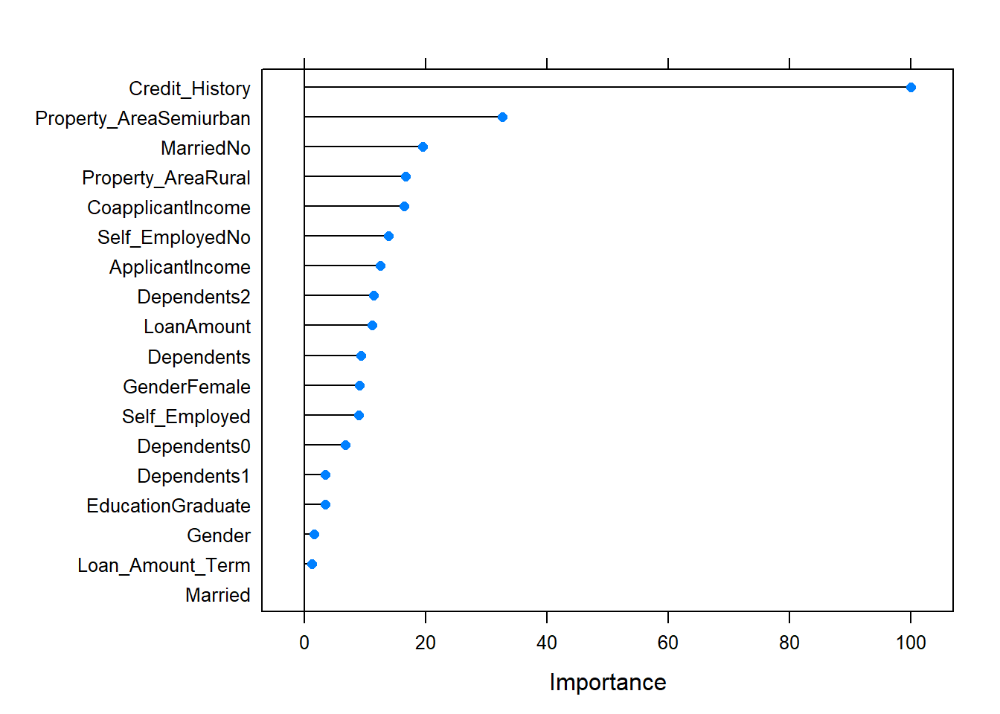

Template for ML modelling
Using machine learning is a highly repetitive process. In this notebook I tried to create unified template to save typing time in my next projects. Most of the time it’s as easy as changing input dataset, and in other cases it is also helpful as a reminder of steps to make.
Basics
library(tidyverse)
library(caTools)
library(ROCR)
library(caret)Here we assign our dataset to name df and changing the target column name to TARGET
df <- read.csv("Train.csv", stringsAsFactors = F)
df<-df%>%select(-Loan_ID)
name_target<-"Loan_Status"
names(df)[which(names(df)==name_target)]<-"TARGET"Here is the place for explanatory data analysis. As this process is highly dependent on the dataset, I included only small chunk.
df%>%summary()## Gender Married Dependents
## Length:614 Length:614 Length:614
## Class :character Class :character Class :character
## Mode :character Mode :character Mode :character
##
##
##
##
## Education Self_Employed ApplicantIncome CoapplicantIncome
## Length:614 Length:614 Min. : 150 Min. : 0
## Class :character Class :character 1st Qu.: 2878 1st Qu.: 0
## Mode :character Mode :character Median : 3812 Median : 1188
## Mean : 5403 Mean : 1621
## 3rd Qu.: 5795 3rd Qu.: 2297
## Max. :81000 Max. :41667
##
## LoanAmount Loan_Amount_Term Credit_History Property_Area
## Min. : 9.0 Min. : 12 Min. :0.0000 Length:614
## 1st Qu.:100.0 1st Qu.:360 1st Qu.:1.0000 Class :character
## Median :128.0 Median :360 Median :1.0000 Mode :character
## Mean :146.4 Mean :342 Mean :0.8422
## 3rd Qu.:168.0 3rd Qu.:360 3rd Qu.:1.0000
## Max. :700.0 Max. :480 Max. :1.0000
## NA's :22 NA's :14 NA's :50
## TARGET
## Length:614
## Class :character
## Mode :character
##
##
##
## df$TARGET%>%summary()## Length Class Mode
## 614 character characterPreprocessing
Now it’s time for preprocessing the dataset to suit Caret package methodology. First step is cropping the dataset. Use this step only if you encounter memory usage problems during fitting the model.
#index_head<-createDataPartition(df$TARGET, p =0.005, list = F) #experiment with p value, the more data you leave unchaged the better for the accuracy.
#df_small<-df[index_head,]
df_small<-dfDealing with missing values
There are quite a few approaches to deal with missing values, and the question what to do is highly case-dependent. Here I’m using median imputation for numeric variables and changing NA value to “na” string in text variables. Using this technique you will probably obtain some reasonable baseline to test out another ideas.
df_small%>%
mutate_if(is.numeric,function(x) ifelse(is.na(x), quantile(x, 0.5, na.rm=T)%>%as.numeric(), x))%>% #numeric variables
mutate_if(function(x) !is.numeric(x), function(x) ifelse(is.na(x), "na", x))->df_smallNext step is using dummy variables to encode strings as numbers. This is versatile approach that will work using every model, but this step isn’t always necessary as some models (decision trees for example) can also deal with categorical variables.
dummies <- dummyVars(TARGET ~ ., data = df_small)
df_small_dum<-predict(dummies, df_small)%>%as.data.frame()
df_small_dum$TARGET<-as.factor(df_small$TARGET)
df_small<-df_small_dum
rm(df_small_dum)The dataset is almost ready to modelling. Other steps to add would be for example dimensionality reduction using PCA.
Creating training and test sets:
index_train<-createDataPartition(df_small$TARGET, p=0.7, list=F)
training<-df_small[index_train, ]
test<-df_small[-index_train, ]To save execution time good idea is to save preprocessed dataset to a file.
save.image("data_preprocessed.Rdata")
#load("data_preprocessed.RData")Modelling
And now the funniest part. Creating models and evaluation using caret package is a piece of cake. A standard approach would be to define training control (in this case repeatedCV) and use it iteratively using different models to obtain better and better results. Last step is comparing the models using resampling and choosing the winner.
library(gbm)
tr_cont<- trainControl(method="repeatedcv",
#add these two lines if you are using AUC as a metric:
#summaryFunction = twoClassSummary,
#classProbs = T,
repeats=2, number=2)Model 1- gbm
model1<-train(TARGET~. , data= training,
method="gbm",
verbose=F,
#metric="ROC",
trControl=tr_cont
)Checking performance and stats of the model
model1## Stochastic Gradient Boosting
##
## 431 samples
## 24 predictor
## 2 classes: 'N', 'Y'
##
## No pre-processing
## Resampling: Cross-Validated (2 fold, repeated 2 times)
## Summary of sample sizes: 215, 216, 215, 216
## Resampling results across tuning parameters:
##
## interaction.depth n.trees Accuracy Kappa
## 1 50 0.8201604 0.5143957
## 1 100 0.8155308 0.5066546
## 1 150 0.8108850 0.4963489
## 2 50 0.8120317 0.4988939
## 2 100 0.7899978 0.4589649
## 2 150 0.7911606 0.4664259
## 3 50 0.8027724 0.4810743
## 3 100 0.7911660 0.4636118
## 3 150 0.7783969 0.4417704
##
## Tuning parameter 'shrinkage' was held constant at a value of 0.1
##
## Tuning parameter 'n.minobsinnode' was held constant at a value of 10
## Accuracy was used to select the optimal model using the largest value.
## The final values used for the model were n.trees = 50, interaction.depth
## = 1, shrinkage = 0.1 and n.minobsinnode = 10.#plot(model1)varImp(model1)%>%plot()
Model 2- glm
model2<-train(TARGET~. , data= training,
method="glm",
#metric="ROC",
family=binomial(), #this is a parameter of glm model, to remove in other models
trControl=tr_cont
)Checking performance and stats of the model
model2## Generalized Linear Model
##
## 431 samples
## 24 predictor
## 2 classes: 'N', 'Y'
##
## No pre-processing
## Resampling: Cross-Validated (2 fold, repeated 2 times)
## Summary of sample sizes: 216, 215, 215, 216
## Resampling results:
##
## Accuracy Kappa
## 0.8143842 0.5122778varImp(model2)%>%plot()
… and so on. Once the schema is right, adding new models to test is as easy as copying few lines and changing name of the model.